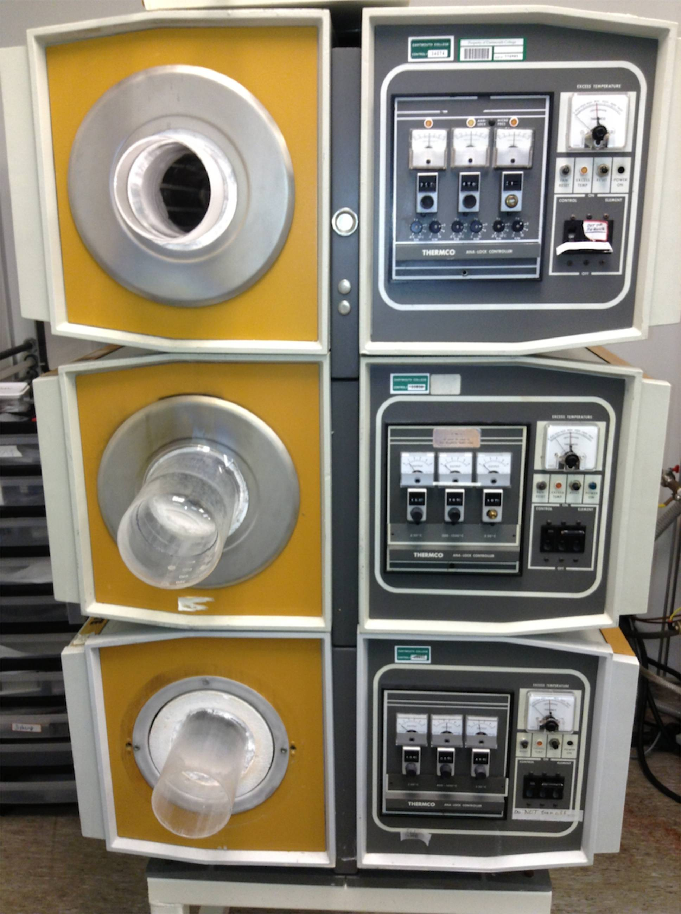

Atm Diffusion Furnaces
Triple stack 4" diameter tube Minibrute diffusion furnaces by Thermco,
for use at atmospheric
pressure and temperatures between 400 and 1150C (1200C for short times).
INSTRUCTIONS:
Process gasses:
- Oxygen
- Water Vapor (bubbler)
- Nitrogen
- Argon
- Forming gas flow are available,
Flowmeter calibrated is for nitrogen; other gasses require a
calculation.
For short time single wafer processing or if
a rapid ramping of temperature up to 1200C is desired,
a Rapid Thermal Anneal is
more appropriate than a diffusion furnace run.